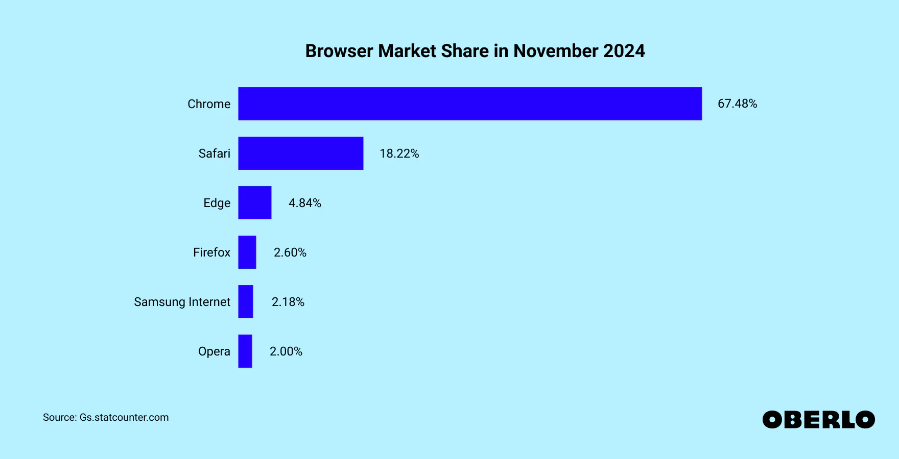

This is a website with my research on browsers.
These are our five browser giants that dominate today: Chrome, Opera, Edge, Safari, and Firefox, the first three all built on Google’s open source Chromium. Today, Safari accounts for around 18% of browsers and Firefox places third at 4%. Mobile phones have taken over the desktop as the most popular way to access the internet, opening new challenges and opportunities to developers as they navigate creating for the internet on the go and on a smaller screen.
